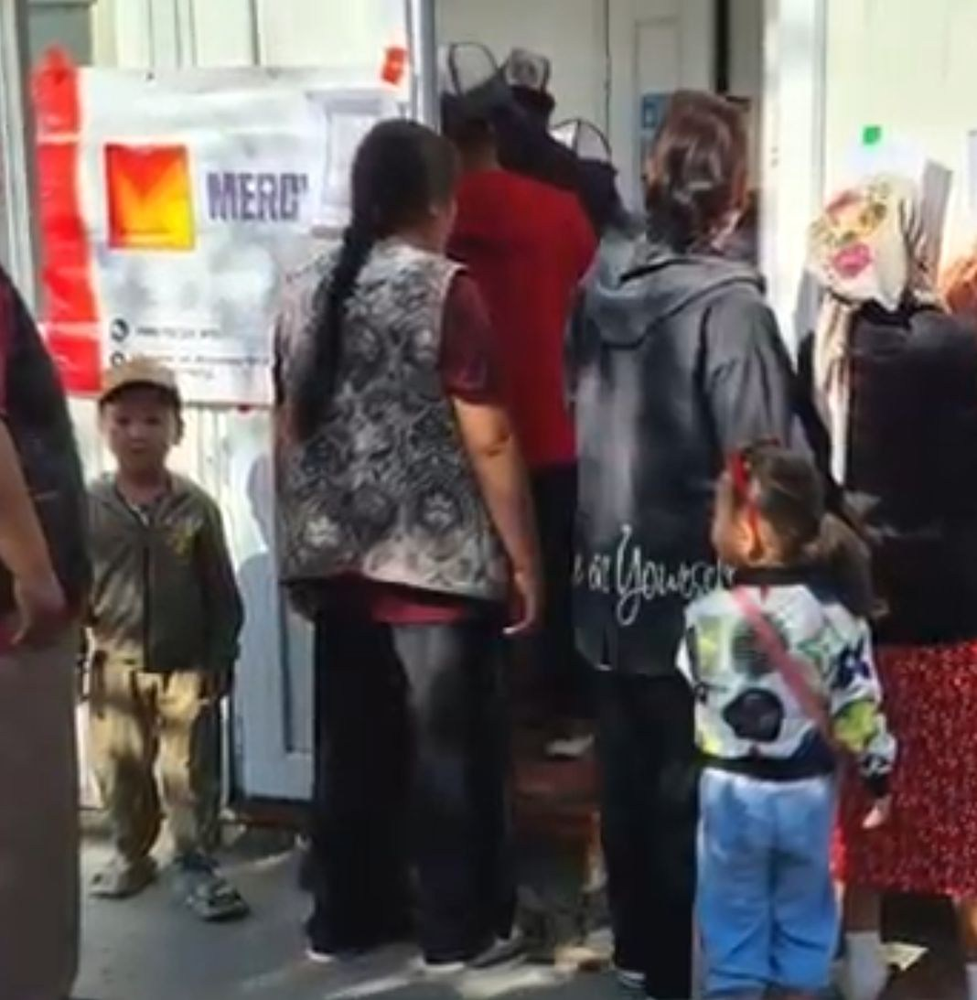

Daily consultations
Adults, children, teenagers and pregnant patients — all seen in one place.
Bishkek · since October 2023
Private medical centre providing high-quality care based on modern medical knowledge and international experience.


Adults, children, teenagers and pregnant patients — all seen in one place.
Consultations and reports in Kyrgyz, Russian, English, Chinese, German and French.
Growth and development, vision screening, EKG, anemia and diabetes screening, laboratory tests.
For schools, flying, travel and tourism, employment and insurance.

Mobile clinics
For over 10 years, we have been conducting medical consultations in various regions of Kyrgyzstan.
Learn more →Care for the whole family in one place — no need for expensive specialist consultations.
We follow evidence-based methods and try to limit unnecessary additional investigations.
Family medicine, pediatrics, gynecology, pulmonology and ultrasound.
We provide training for doctors and medical students.